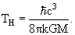

Звезды, как известно, получают свою энергию из реакций
термоядерного синтеза, и у каждой звезды рано или поздно наступает момент, когда
термоядерное топливо подходит к концу. Чем выше масса звезды, тем быстрее она
сжигает все, что может, и переходит на заключительную стадию своего
существования. Дальнейшие события могут идти по разным сценариям, какой именно –
в первую очередь зависит опять же от массы.
В то время, когда «догорает» водород в центре звезды, в ней
выделяется гелиевое ядро, сжимающееся и выделающее энергию. В дальнейшем в нем
могут начаться реакции горения гелия и последующих элементов (см. ниже). Внешние
слои увеличиваются во много раз под действием увеличившегося давления, идущего
из нагретого ядра, звезда становится красным гигантом.
В зависимости от массы звезды, в ней могут протекать разные
реакции. От этого зависит, какой состав будет иметь звезда к моменту угасания
синтеза.
| Масса, MC | Возможные реакции |
|---|---|
| 0.08 | нет |
| 0.3 | горение водорода |
| 0.7 | горение H, He |
| 8 | горение H, He, C |
| 25 | все реакции синтеза с выделением энергии |
Белые карлики
Для звезд с массой до примерно 10 MC
ядро весит менее 1,5 MC. После завершения термоядерных реакций
прекращается давление излучения, и ядро начинает сжиматься под действием
гравитации. Сжимается оно до тех пор, пока не начнет мешать давление
вырожденного электронного газа, обусловленное принципом Паули. Внешние слои
сбрасываются и рассеиваются, образуя планетарную туманность. Первую такую
туманность открыл французский астроном Шарль Мессье в 1764 году и занес ее в
каталог под номером M27.
То, что получилось из ядра, называется белым карликом. Белые
карлики имеют плотностьбольше 107
г/см3 и температуру поверхости порядка 104
К. Светимость на 2-4 порядка ниже светимости Солнца. Термоядерный синтез в нем
не идет, вся излучаемая им энергия была накоплена ранее.Таким образом, белые
карлики медленно остывают и перестают быть видимыми.
У белого карлика еще есть шанс проявить активность, если он
входит в состав двойной звезды и перетягивает на себя массу компаньона
(например, компаньон стал красным гигантом и заполнил своейй массой всю свою
полость Роша). В таком случае может начаться либо синтез водорода в CNO-цикле с
помощью углерода, содержащегося в белом карлике, заканчивающийся сбросом
внешнего водородного слоя («новая» звезда). Либо масса белого карлика может
вырасти настолько, что загорится ее углеродно-кислородная составляющая, волной
взрывного горения, идущей из центра. В результате образуются тяжелые элементы с
выделением большого количества энергии:
12С
+ 16O → 28Si + 16.76 МэВ
28Si + 28Si → 56Ni + 10.92
МэВ
Светимость звезды сильно возрастает в течение 2 недель,
затем в течение еще 2 недель быстро спадает, после чего продолжает падать
примерно в 2 раза за 50 дней. Основная энергия (около 90%) испускается в виде
гамма-квантов из цепочки распада изотопа никеля.Такое явление называется
сверхновой 1 типа.
Белых карликов массой в 1.5 и выше масс Солнца не бывает. Это
объясняется тем, что для существования белого карлика необходимо уравновесить
гравитационное сжатие давлением электронного газа, но происходит это при массах
не более 1.4 MC, это ограничение называется пределом Чандрасекара.
Величину можно получить как условие равенства сил давления силам гравитационного
сжатия в предположении, что импульсы электронов определяются соотношением
неопределенности для занимаемого ими объема, а движутся они со скоростью,
близкой к скорости света.
Нейтронные звезды
В случае с более массивными ( > 10 MC)
звездами все происходит несколько иначе.Высокая температура в ядре активизирует
реакции с поглощением энергии, такие как выбивание протонов, нейтронов и
альфа-частиц из ядер, а также e-захват высокоэнергетичных электронов,
компенсирующих разницу масс двух ядер. Вторая реакция создает избыток нейтронов
в ядре. Обе реакции ведут к его охлаждению и общему сжатию звезды. Когда энергия
ядерного синтеза заканчивается, сжатие превращается в почти свободное падение
оболочки на сжимающееся ядро. При этом резко ускоряется скорость термоядерного
синтеза во внешних падающих слоях, что приводит к испусканию огромного
количества энергии за несколько минут (сопоставимую с энергией, которую легкие
звезды испускают за все свое существование).
Сжимающееся ядро за счет высокой массы преодолевает давление
электронного газа и сжимается дальше. При этом происходят реакии p + e-
→ n + νe, после которых электронов, мешающих сжатию, в ядре почти не
остается. Сжатие происходит до размеров в 10 − 30 км, соответствующих плотности,
установленной давлением нейтронного вырожденного газа. Падающее на ядро вещество
получает отраженную от нейтронного ядра ударную волну и часть выделившейся при
его сжатии энергии, что приводит к стремительному выбросу внешней оболочки в
стороны. Получившийся объект называется нейтронной звездой. Большую часть (90%)
энергии, выделившейся от гравитационного сжатия, уносят нейтрино в первые
секунды после коллапса. Вышеописанный процесс называется взрывом сверхновой
второго типа. Энергия взрыва такова, что некоторые их них (редко) видны
невооруженным глазом даже в дневное время. Первая сверхновая была
зарегистрирована китаййскими астрономами в 185 году н.э. В настоящее время
регистрируется несколько сотен вспышек в год.
Получившаяся нейтронная звезда имеет
плотность ρ ~ 1014 − 1015 г/см3.
Сохранение момента импулься при сжатии звезды приводит к очень малым периодам
обращения, обычно в пределах от 1 до 1000 мс. Для обычных звезд такие периоды
невозможны, т.к. Их гравитация не сможет противодействовать центробежным силам
такого вращения. Нейтронная звезда имеет очень большое магнитное поле,
достигающее 1012-1013
Гс на поверхности, что приводит к сильному электромагнитному излучению.
Несовпадающая с осью вращения магнитная ось приводит к тому, что в заданное
направление нейтронная звезда посылает периодические (с периодом вращения)
импульсы излучения. Такая звезда называется пульсаром. Этот факт помог их
экспериментальному открытию и используется для обнаружения. Обнаружить
нейтронную звезду оптическими методами намного сложнее из-за малой светимости.
Период обращения постепенно уменьшается из-за перехода энергии в излучение.
Внешний слой нейтронной звезды состоит
из кристаллического вещества, в основном железа и соседних с ним элементов.
Большая часть остальной массы — нейтроны, в самом центре могут находиться пионы
и гипероны. Плотность звезды растет к центру и может достигать величин, заметно
больших плотности ядерной материи. Поведение материи при таких плотностях плохо
изучено. Существуют теории о свободных кварках, в том числе не только первого
поколения, при таких экстремальных плотностях адронной материи. Возможны
сверхпроводимое и сверхтекучее состояние нейтронного вещества.
Существует 2 механизма охлаждения
нейтронной звезды. Один из них – излучение фотонов, как и всюду. Второй механизм
– нейтринный. Он преобладает до тех пор, пока температура ядра выше 108 K.
Обычно это соответствует температуре поверхности выше 106 K
и длится 105−106
лет. Существует несколько способов излучения нейтрино:
- Прямой урка-процесс
n → p + e- + e
p + e- → n + νe
Этот процесс невозможен в идеальном вырожденном газе вследствие закона сохранения импульса (требуется pF(n) < pF(p) + pF(e)). В реальных условиях в центре нейтронной звезды процесс все же допускается. Это самый эффективный процесс испускания нейтрино. - Модифицированный урка-процесс
N + n → N + p + e- + e
N + p + e- → N + n + νe
В реакции участвует дополнительный нуклон. Он избавляет от ограничений, связанных с импульсом нейтрона, но необходимость участия дополнительной частицы снижает скорость протекания реакции и делает ее требовательнее к температуре. Это основной механизм охлаждения нейтронных звезд. - Тормозное
излучение
N + N → N + N + ν +
e + e → e + e + ν +
Этот процесс слабее урка процессов. Но при наличии сверхтекущести урка-процессы будут подавлены, и этот становится важным. - Испускание нейтрино при куперовском спаривании
N → N + ν +
Нуклон испускает пару при переходе через щель в энергетическом спектре сверхтекучего вещества. Важен при наличии сверхтекучести.
Черные дыры
В случае, если масса исходной звезды превышала 30 масс Солнца, то образующееся во взрыве сверхновой ядро будет тяжелее 3 MC. При такой массе давление нейтронного газа больше не может сдерживать гравитацию, и ядро не останавливается на стадии нейтронной звезды, а продолжает коллапсировать (тем не менее, экспериментально обнаруженные нейтронные звезды имеют массы не более 2 масс Солнца, а не трех). На этот раз коллапсу уже ничего не помешает, и образуется черная дыра. Этот объект имеет чисто релятивистскую природу и не может быть объяснен без ОТО. Несмотря на то, что вещество, по теории, сколлапсировало в точку − сингулярность, черная дыра имеет ненулевой радиус, называемый радиусом Шварцшильда:
RШ = 2GM/c2.
Радиус обозначает границу непреодолимого даже для фотонов
гравитационного поля черной дыры, называемую горизонтом событий. К примеру,
радиус Шварцшильда Солнца − всего 3 км. Вне горизонта событий гравитационное
поле черной дыры такое же, как поле обычного объекта ее массы. Наблюдать черную
дыру можно только по косвенным эффектам, так как сама она сколько-нибудь
заметной энергии не излучает.
Несмотря на то, что покинуть горизонт событий ничто не может,
черная дыра все же может создавать излучение. В квантовом физическом вакууме
постоянно рождаются и исчезают виртуальные пары частица-античастица. Сильнейшее
гравитационное поле черной дыры может успеть провзаимодействовать с ними до
того, как они исчезнут, и поглотить античастицу. В случае, если полная энергия
виртуальной античастицы была отрицательна, черная дыра при этом теряет массу, а
оставшаяся частица становится реальной и получает энергию, достаточную, чтобы
улететь из поля черной дыры. Это излучение называется излучением Хокинга и имеет
спектр абсолютно черного тела. Ему можно приписать некоторую температуру:

Влияние этого процесса на массу большинства черных дыр
ничтожно по сравнению с той энергией, которую они получают даже от реликтового
излучения. Исключение составляют реликтовые микроскопические черные дыры,
которые могли образоваться на ранних стадиях эволюции Вселенной. Малые размеры
ускоряют процесс испарения и замедляют процесс набора массы. Последние стадии
испарения таких черных дыр должны заканчиваться взрывом. Подходящих под описание
взрывов зарегистрировано ни разу не было.
Вещество, падающее на черную дыру, нагревается и становится
источником рентгеновского излучения, которое служит косвенным признаком наличия
черной дыры. При падении на черную дыру вещества с большим моментом импульса оно
образует вращающийся аккреционный диск вокруг нее, в котором частицы теряют
энергию и момент импульса перед падением на черныю дыру. В случае с
сверхмассивной черной дырой, возникают два выделенных направления вдоль оси
диска, в которых давление испускаемого излучения и электромагнитные эффекты
ускоряют выбившиеся из диска частицы. Это создает мощные струи вещества в обе
стороны, которые также можно зарегистрировать. По одной из теорий, именно так
устроены активные ядра галактик и квазары.
Вращающаяся черная дыра представляет собой более сложный
объект. Своим вращением она «захватывает» некоторую область пространства за
горизонтом событий («Эффект Лензе-Тирринга»). Эта область называется эргосферой,
ее граница называется пределом статичности. Предел статичности представляет
собой эллипсоид, совпадающий с горизонтом событий в двух полюсах вращения черной
дыры.
Вращающиеся черные дыры имеют дополнительный механизм потери
энергии через передачу ее частицам, попавшим в эргосферу. Такая потеря энергии
сопровождается потерей момента импульса и замедляет вращение.
Список литературы
- Б.C. Ишханов, И.М. Капитонов, И.А. Тутынь "Нуклеосинтез во вселенной" М., Изд-во Московского университета. 1998.
- http://www.astronet.ru/
- С.Б.Попов, М.Е.Прохоров "Астрофизика одиночных нейтронных звезд: радиотихие нейтронные звезды и магнитары" ГАИШ МГУ, 2002
- Уильям Дж. Кауфман "Космические рубежи теории относительности" 1977
- Другие источники в интернет
декабрь 2010 г.
[students/radiation/rad_include.htm]